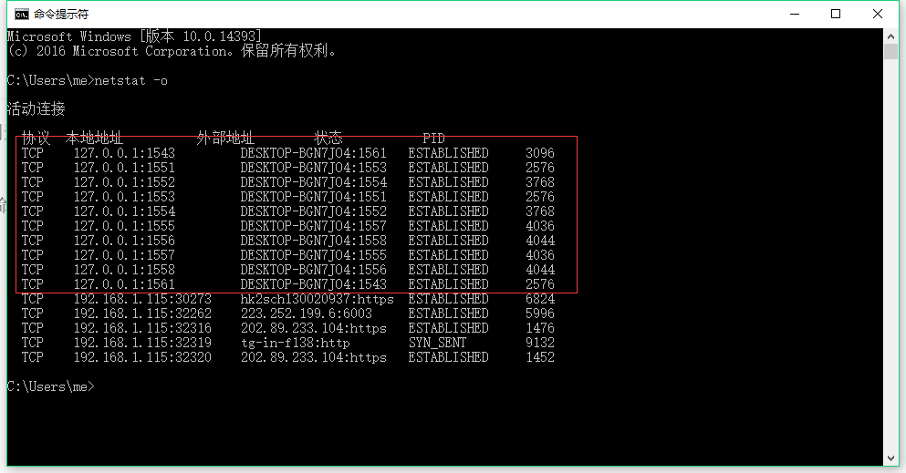
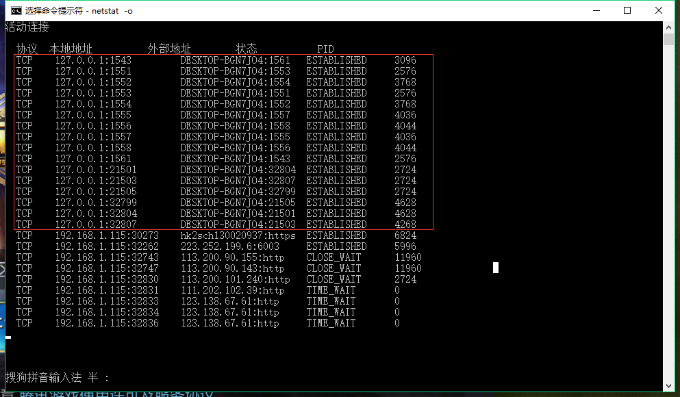
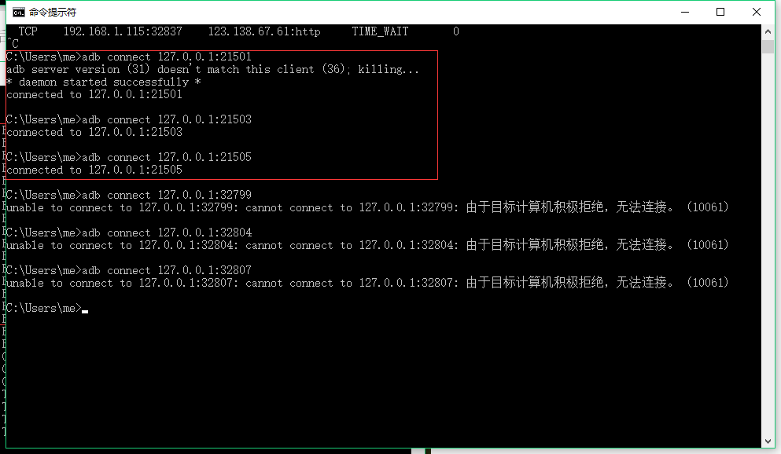
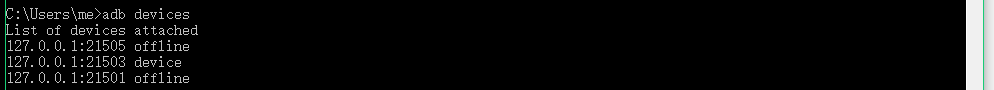
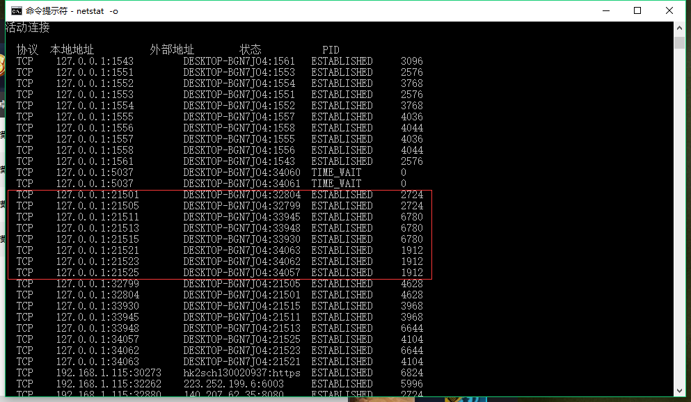
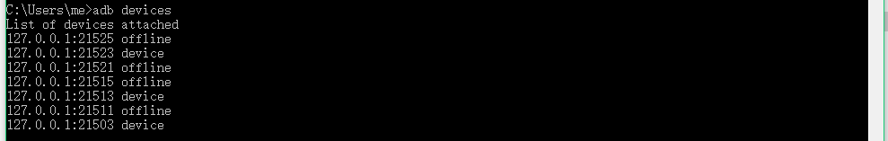
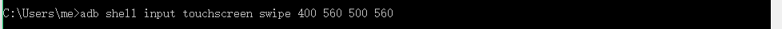

最近和同学一起准备写一个王者荣耀的挂机程序，因此写一个文档把实验过程和实验过程中遇到的问题进行记录。
目前选择的是安卓微信平台，通过微信扫码登陆。
虚拟机的选择
在腾讯的王者荣耀的官方网站上有推荐的虚拟机，在尝试了不同的虚拟机后选择了逍遥游模拟器，优点：可以模拟按键、能够多开程序。
虚拟机端口查找
在选择好了虚拟机后，要尝试用adb连接到开的程序，但是现在是不知道程序运行的端口，因此要查询到程序运行的端口。
测试平台选择了windows10，因此在cmd命令行工具中输入命令，使用netstat -0命令扫描全部的端口。

在没有运行模拟器时发现端口，便于跟模拟器运行后的端口进行对比。运行模拟器：

根据上面的对比，大概猜测端口为21501、21503、21505、32799、32804、32807，尝试使用abd全部连接，然后根据连接情况进行判断。

可以进一步判断端口为21501、21503、21505。然后查看当前的运行的模拟器：

已经可以判断端口为21503。
模拟器多开端口查询·
跟上诉的步骤相同：


可以观察出大致每添加一个模拟器，端口号增加10。
简单通过adb shell连接控制游戏

可以发现王者里面的英雄动了，第一步成功。
遇到问题
- 连接模拟器过多，解决方法：打开任务管理器，把adb.exe进程结束，然后重新连接。